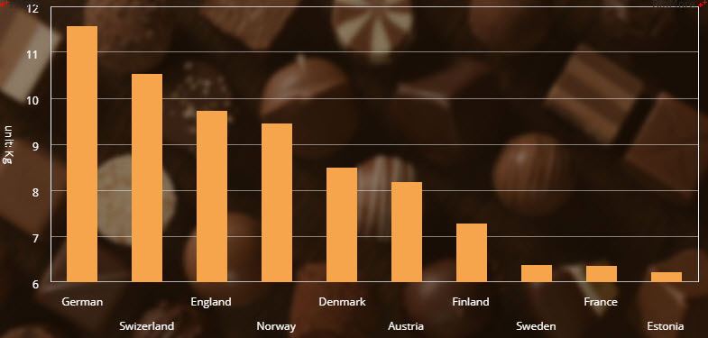

|
알메이트-차트 6.0 사용 설명서
|
차트의 배경에 격자선을 표시하거나 이미지를 이용하여 보기좋게 표현할 수 있습니다. 이러한 작업은 <backgroundElements> 속성에 <GridLines> 과 <Image> 노드를 설정함으로써 가능합니다.
차트의 배경에 격자선을 표시하기 위해서는 차트 노드의 <backgroundElements> 속성에 <GridLines> 노드를 정의해야 합니다. 다음은 <GridLines> 노드의 주요 속성들을 설명한 표입니다.
| 속성명 | 유효값 (*: 기본값) | 설명 |
|---|---|---|
| direction | both, horizontal(*), vertical |
표시되는 배경 격자선의 유형을 지정합니다. |
| horizontalAlternateFill |
이웃한 두 수평 격자선 사이의 공간에 색을 번갈아서 칠할 때, 두번째 사용될 색의 스타일을 지정합니다. |
|
| horizontalCenterStroke |
차트의 중앙에 표시되는 수평선의 색의 스타일을 지정합니다. |
|
| horizontalChangeCount | 숫자 기본값: 1 |
이웃한 두 수평 격자선 사이의 공간에 색을 번갈아서 칠할 때, 몇 번마다 색을 변경할지를 지정합니다. |
| horizontalFill |
이웃한 두 수평 격자선 사이의 공간에 칠할 색의 스타일을 지정합니다. |
|
| horizontalShowCenterLine | true, false(*) |
차트의 중앙에 수평선을 표시할지 여부를 설정합니다. |
| horizontalStroke |
수평 격자선의 색의 스타일을 지정합니다. |
|
| verticalAlternateFill |
이웃한 두 수직 격자선 사이의 공간에 색을 번갈아서 칠할 때, 두번째 사용될 색의 스타일을 지정합니다. |
|
| verticalCenterStroke |
차트의 중앙에 표시되는 수직선의 색의 스타일을 지정합니다. |
|
| verticalChangeCount | 숫자 기본값: 1 |
이웃한 두 수직 격자선 사이의 공간에 색을 번갈아서 칠할 때, 몇 번마다 색을 변경할지를 지정합니다. |
| verticalFill |
이웃한 두 수직 격자선 사이의 공간에 칠할 색의 스타일을 지정합니다. |
|
| verticalShowCenterLine | true, false(*) |
차트의 중앙에 수직선을 표시할지 여부를 설정합니다. |
| verticalStroke |
수직 격자선의 색의 스타일을 지정합니다. |
다음은 3D 바 차트의 배경에 수직, 수평 격자선을 표시한 예제입니다. 이 예제에서는 이웃한 격자선 사이의 공간에 칠하는 색이 설정되었습니다.
See the CodePen 알메이트 차트 - 차트에 격자선 표시
차트의 배경에 이미지를 표시하기 위해서는 차트 노드의 <backgroundElements> 속성에 <Image> 노드를 정의해야 합니다. 다음은 <Image> 노드의 주요 속성들을 설명한 표입니다.
| 속성명 | 유효값 (*: 기본값) | 설명 |
|---|---|---|
| alpha | 0 과 1 사이의 숫자 기본값: 1 |
이미지의 투명도를 설정합니다. |
| bottom | 숫자 기본값: NaN |
차트의 하단 가장자리와 이미지가 표시될 위치 사이의 여백의 크기를 지정합니다. |
| height | 숫자 |
이미지의 세로 크기를 지정합니다. |
| left | 숫자 기본값: NaN |
차트의 좌측 가장자리와 이미지가 표시될 위치 사이의 여백의 크기를 지정합니다. |
| maintainAspectRatio | true, false(*) |
원본 이미지의 비율을 유지할지 여부를 설정합니다. |
| right | 숫자 기본값: NaN |
차트의 우측 가장자리와 이미지가 표시될 위치 사이의 여백의 크기를 지정합니다. |
| source | 텍스트 (url) |
이미지 파일이 존재하는 URL을 지정합니다. |
| top | 숫자 기본값: NaN |
차트의 상단 가장자리와 이미지가 표시될 위치 사이의 여백의 크기를 지정합니다. |
| width | 숫자 |
이미지의 가로 크기를 지정합니다. |
다음은 라인 차트의 배경에 이미지를 표시하는 예제입니다.
See the CodePen 알메이트 차트 - 배경에 이미지 표시
다음은 라인 차트의 배경 우측 하단에 로고 이미지를 표시하는 예제입니다.
See the CodePen 알메이트 차트 - 배경 우측 하단에 로고 이미지 표시
차트의 축을 포함한 전체 영역에 배경 이미지를 표시할 수도 있습니다. 이는 차트가 생성되는 <DIV> 요소에 다음과 같이 HTML background 스타일 속성을 설정함으로써 가능합니다.
See the CodePen 알메이트 차트 - DIV 배경 이미지
<rMateChart> 노드의 경계선에 대한 속성값들을 설정해서 차트에 경계선을 표시하고 이에 대한 스타일링을 할 수 있습니다. 차트 경계선 설정에 관련된 속성은 다음과 같습니다.
| 속성명 | 속성명 (*: 기본값) | 설명 |
|---|---|---|
| borderStyle | none(*), solid, inset, outset |
none: 경계선을표시하지 않습니다. solid: 직선경계선을 표시합니다. inset: 3D 눌려진(inset) 경계선을 표시합니다. outset: 3D 돌출된(outset) 경계선을 표시합니다. |
| borderColor | #16진수 컬러 코드 표기 |
경계선의 색을 지정합니다. |
| borderRadius | 0(*) 이상의 숫자 |
경계선 모서리의 둥근 정도를 지정합니다. |
| borderThickness | 1(*) 이상의 숫자 |
경계선의 굵기를 지정합니다. |
다음은 경계선 속성값들을 설정한 코드와 이를 적용해서 출력한 차트의 예입니다.
See the CodePen 알메이트 차트 - 차트의 테두리 선
차트의 배경에 원하는 색을 설정할 수 있습니다. 배경색 설정에 관련된 속성은 다음과 같습니다.
| 속성명 | 유효값 (*: 기본값) | 설명 |
|---|---|---|
| backgroundColor | #16진수 컬러 코드 표기 기본값: #FFFFFF |
배경색을 지정합니다. |
| backgroundAlpha | 0 과 1(*) 사이의 숫자 |
배경색의 투명도를 지정합니다. |
다음은 배경색 속성값들을 설정한 코드와 이를 적용해서 출력한 차트의 예입니다.
See the CodePen 알메이트 차트 - 차트의 배경색 설정